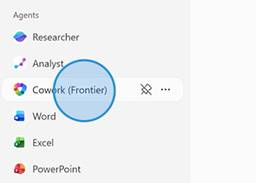
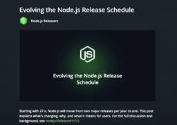
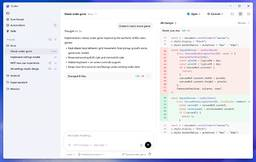

Publickey
https://www.publickey1.jp/
Enterprise ITに軸足を置き、新たにIT業界を変えつつあるクラウドコンピューティングやHTML5など最新の話題を、ブロガー独自の分析を交え、充実した記事で紹介するブログです。毎日更新しています。
フィード

ViteネイティブなWebプラットフォーム「Void」発表。Cloudflareの上に構築されたフルスタックの実行環境
Publickey
JavaScriptのバンドルツール「Vite」などを開発しているVoidZeroは、ViteからシームレスにデプロイできるViteネイティブなWebアプリケーションプラットフォーム「Void」を発表しました。 VoidはCloudflar...
1時間後
JavaScriptの統合ツールチェーン「Vite+」がオープンソースで公開
Publickey
JavaScriptのESモジュールに対応した高速なビルドツール「Vite」などを開発しているVoidZeroは、Viteを含むJavaScriptの統合開発ツールチェーン「Vite+」アルファ版をオープンソースで公開しました（GitHub...
41分後
ビルドツール「Vite 8.0」正式リリース。Rustベースの新バンドラ「Rolldown」採用でより一貫した動作や最適化を実現
Publickey
JavaScriptのESモジュールに対応した高速なビルドツール「Vite」の最新版「Vite 8.0」正式版がリリースされました。 Vite 8.0 is here!The most significant architectural ...
38分後
静的サイトジェネレータ「Astro 6.0」正式リリース。開発環境としてCloudflare Workers対応。Rust製コンパイラの実験的追加など
Publickey
静的サイトジェネレータ「Astro」の最新版となる「Astro 6.0」正式版がリリースされました。 Astroを開発してきたAstro Technology Companyは今年（2026年）1月、CDNサービス大手のCloudflare...
3日前
Google PlayのGoogleの取り分が20％以下に値下げへ。独自課金システムや外部Webサイトに誘導しての課金も可能に
Publickey
Googleは、Google Playにおける課金時のGoogleの取り分を従来の30％から20％に値下げすると同時に、アプリ独自の課金システムやGoogle Play外のWebサイトへ誘導しての課金も可能にすると発表しました。 また、サー...
4日前
JavaScript製表計算ライブラリ「SpreadJS」、生成AIへの指示で自動集計や分析が可能になる機能搭載 15
15
Publickey
Excelライクな表計算機能をWebアプリケーションなどに組み込めるJavaScript製ライブラリ「SpreadJS」を提供するメシウス（旧グレープシティ）は、同製品の新バージョン「SpreadJS v19J」で、生成AIとの連携機能を搭...
4日前
マイクロソフトが「.NET Skills」公開。AIエージェントの.NET開発能力を拡張
Publickey
マイクロソフトは、AIエージェントの能力を拡張する「Agent Skills」の仕組みに対応した、.NETの開発スキルを向上させる「.NET Skills」を公開しました。 Agent Skillsは、Anthropicが提唱したAIエージ...
5日前
Claude Codeに高度なコードレビュー機能が登場。深いコードレビューに最適化し、人間が見逃しがちなバグまで検出
Publickey
Anthropicは、同社のAIコーディングエージェントであるClaude Codeに高度なコードレビュー機能をリサーチプレビューとして搭載したことを明らかにしました。 AIエージェントにより多数のコードが短時間に生成できるようになってくる...
5日前

Claude CoworkがMicrosoft 365 Copilotに採用。「Copilot Cowork」としてリサーチプレビュー公開
Publickey
マイクロソフトは、同社のオフィススイートのAI機能である「Microsoft 365 Copilot」を拡張し、AnthropicのClaude Coworkを採用した「Copilot Cowork」を発表しました。 そもそもAnthrop...
6日前

Node.js、今後は年に一度のリリースとなり、すべてのリリースがLTS版になると発表
Publickey
Node.jsのリリースチームは、これまで6カ月ごとに年に2回行われていたNode.jsのリリースを年に1回とし、すべてのリリースがLTS版になることを発表しました。 毎年4月にリリースされ、安定化期間を経てLTSに移行 現在までNode....
6日前
専用OS「Windows CPC」を搭載した「クラウドPC」デバイスがDellとASUSから登場
Publickey
マイクロソフトは、デスクトップ仮想化の技術を用いてWindows環境をクラウドから配信する「Windows 365 クラウドPC」専用のクライアントデバイスがDellとASUSから登場することを発表しました。 Announcing new ...
6日前
AWS、AWS上ですぐ使えるOpenClawを提供開始。仮想プライベートサーバ（VPS）「Amazon Lightsail」のインスタンスイメージとして
Publickey
Amazon Web Services（AWS）は、仮想プライベートサーバ（VPS）のAmazon Lightsailで簡単にOpenClawが導入できる、事前設定されたOpenClawインスタンスイメージの提供を開始しました。 Amazo...
7日前

OpenAI、「Codex for Windows」正式リリース。Windowsサンドボックス内で安全にAIエージェントを実行、WSLにも対応
Publickey
OpenAIは、Windows対応のAIエージェントによる開発環境「Codex for Windows」の正式リリースを発表しました。 Codex for Windowsは、AIエージェントを用いてプログラミングやテストを行うための開発環境...
7日前
Claude Codeが「音声モード」搭載。AIに話しかけながらのコーディングが可能に
Publickey
Anthropicが提供するAIコーディングツールであるClaude Codeに、新たに「音声モード」が搭載されることが明らかになりました。 AnthropicでClaude Codeを担当するエンジニアThariq Shihipar氏が次...
7日前
Google Workspaceをコマンドラインで操作する「gws」、Googleがオープンソースで公開。Agent Skillsファイルも提供し、AIエージェントによる適切な操作実現
Publickey
Googleは、GmailやGoogle Drive、Sheets、Docs、Calendarなどを始めとするGoogle Workspace製品に対してコマンドラインからの操作を可能にする「gws」をオープンソースで公開しました。 gws...
10日前